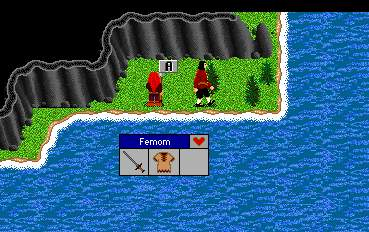

| Fighter/Mentalist Trainer |
 |
| Go southwest of the gates of Frore to the steps of the Halberd Giant. Climb up the steps and continue South from the stairs to the Southern edge of the cliff. Jump down to the trainer. Learn the ways of the Sword and Disciplines. Be sure to make a twig before you come here. |
| Back to Frore. |
| To Halberd Giant. |